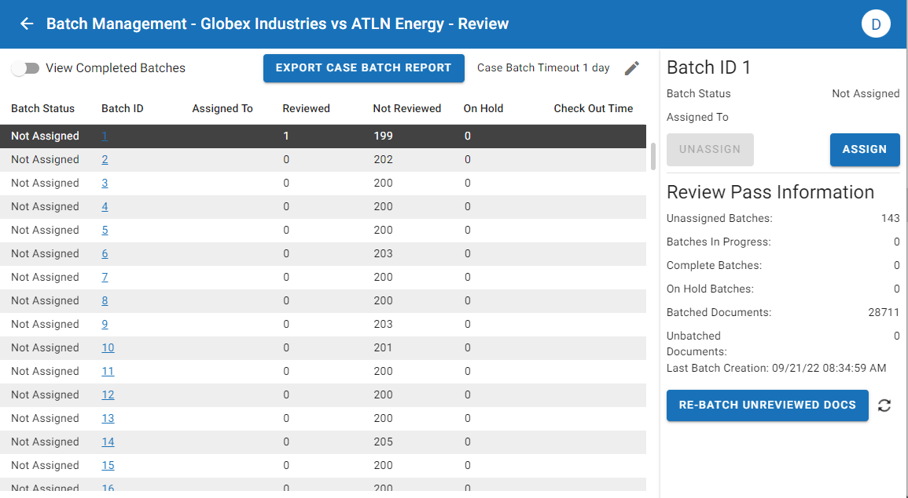

Once a review pass has been created, you can access, manage, and modify it in the Review Pass Management work area. For information on how to create a review pass, see
This topic outlines the process of working in the Review Pass Management work area.

|
|
Note: Review passes can either be |

Detailed metrics are provided on the review pass dashboard. From this dashboard, you can view three different tabs:
-
Overview: The Overview tab provides an in-depth breakdown of review metrics, review progress, documents manually reviewed, and batch information.
-
Reports: The Reports tab offers three different reports to help users visualize data for the review pass.
-
Settings: The Settings tab shows the various parameters defined in the configuration of the review pass.
Work with the Review Pass
Active Learning enabled and Active Learning disabled review passes show the same metrics and graphs in the Review Pass Management work area. This is because
Expand the sections below to learn more about working within each tab, whether for an
|
|
For |
Overview Tab
The Overview tab provides an in-depth breakdown of review metrics, review progress, documents manually reviewed, and batch information. Read through the sections below to learn more about what you can do on the Overview tab.
|
|
Note: The Batch Management section is placed at the top of the Overview tab in AL disabled review passes, but placed at the bottom of the tab in AL enabled review passes. |
Review Metrics
The Review Metrics table displays an array of data that provides a breakdown of review progress and predictions for the tag selected as your primary review purpose. For information about this section, see the table below.
|
|
Note: Predictions represented in this chart may fluctuate widely in the early stages of review, but as the model settles they will begin to solidify. |
|
Metric |
Description |
||
|---|---|---|---|
|
Positive |
This metric displays the total number of documents predicted positive, the number of documents manually reviewed as positive, and the number of unreviewed documents predicted positive. Additionally, it displays any conflicts between the AL prediction and what reviewers manually tagged. For example, if you identify the purpose of a review to be determining responsiveness, documents you tag Responsive show up as positive. If the AL system predicts a document to be negative (a tag other than Responsive) and a reviewer tags it Responsive, this gets logged as a conflict. You can view the full list of conflicts by selecting the hyperlinked
|
||
|
Negative |
This metric displays the total number of documents predicted as negative, the number of documents manually reviewed as negative, and the number of unreviewed documents predicted negative. Additionally, it displays any conflicts between the AL prediction and what reviewers manually tagged. For example, if you identify the purpose of a review to be determining responsiveness, documents that are not tagged Responsive show up as negative. If the AL system predicts a document to be positive (i.e. Responsive) and a reviewer tags it as non-Responsive, this gets logged as a conflict. You can view the full list of conflicts by selecting the hyperlinked number associated with this metric. See Create a QC Batch.
|
||
|
On Hold |
These are the documents placed on hold manually by reviewers. Generally, these are documents that require an additional set of eyes and can be quickly navigated to by clicking on the search link provided. |
||
|
Total Documents |
This metric displays the total number of documents in your review pass, the number of documents that have been tagged manually, the number of unreviewed documents, and the total number of conflicts. |
||
|
Precision |
The calculated percentage of documents that are both predicted and actually positive. For example, let's say you have 1000 documents that the AL system predicts as positive in your review pass. If 800 of these predicted positive documents are actually positive (tagged as such by reviewers), then precision would be 80%. |
||
|
Recall |
The calculated percentage of relevant documents that have been identified in a data set.
For example, let's say you have 1000 documents that the AL system predicts as positive in your review pass. If reviewers have found and tagged 800 of these predicted positive documents, then recall would be 80%. In other words, recall is a measure of how many documents predicted positive have been reviewed and tagged as such. |
||
|
Active Learning Status |
A status ranging from poor to excellent is used to indicate the status of the current active learning model. Many of the metrics are less reliable until this status reaches at least “good.” |
||
|
Prevalence |
This represents the estimated percentage of documents in the review pass that are positive. |
||
|
Responsive Documents |
This is the predicted range of positive documents in the review pass. |
Review Progress Graph
The Review Progress graph displays a breakdown of document review by day, week, or month. The numbers on the left side of this graph represent total documents. The numbers on the right side represent the recall percentage, and correspond to the line graph that extends from one column to the next.

To configure the Review Progress graph:
-
Determine the date range that displays on the graph. Click the dates in the top-left corner of this section to open the calendar. From here, select your starting date. The date is highlighted with a blue circle. Next, select your end date. You can click the right arrow button in the popup window to extend the range into the next month. This range represents the scope of the graph.


Note: If you select a starting date, but decide to choose an earlier date on the calendar, the earlier date becomes your new starting date.
-
Determine if you would like to see the graph represented in days, weeks, or months. Select the appropriate option by clicking Day, Week, or Month in the top-right corner of this section.
-
To see a quick rundown of review progress over the specified range, hover your mouse over a column in the chart.

-
To see a more detailed view of review progress by user, click into one of the bars on this chart. Hover over a column to see more information about each reviewer's individual progress. Click the Back button in the top-right of the graph to return to the broader review progress graph.
-
When you select a column in the graph, a Review Progress Details chart opens with more information about the tagged documents. Select a hyperlinked number to open the associated documents in the Review Grid.

-
When you set a date range for the chart, you can scroll down to see the Documents Manually Reviewed table. This is a detailed table that provides information on individual documents that have been reviewed within the range selected. The information includes:
Metric
Description
Begdoc
The begdoc number that identifies the document.
Reviewer
The individual who reviewed the document. Note that you can see a more detailed view of individual reviewer progress by clicking into one of the bars on the Review Progress chart.
Last Reviewed
The date and time when the document was last reviewed.
Reviewer Tag
Whether the tag applied to the document was positive or negative.
Prediction Agreement
Whether the tag manually applied to the document matched what the AL system predicted.
Current Relevancy Score
The AL system's prediction for how relevant the document is, with a higher number indicating that the system more confidently predicts the document to be positive.
Batch Information
Here you can find a high-level overview of the current status of your review pass based on batch progress.

Additionally, you can:
-
Manage Batches - Click this button to open the Batch Management work area. For more information, see
-
Update Documents - If new documents have been added to the case that meet the scope of the review pass, you can add them to the review pass by clicking the Update button.
Reports Tab
The Reports tab offers insights into your review pass by means of three graphs.
|
|
Note: The information provided on these graphs is updated in real time as you continue to review. |
Relevancy Scores Graph
The Relevancy Scores graph shows a distribution of documents in the selected review pass based on their current relevancy score, also known as their Relevancy Index. This score reveals how confidently the AL system predicts the document to be positive or negative. Documents with a higher score are predicted to have a higher chance of being positive than documents with a lower score. The relevancy range extends from -100 (least likely to be positive) to 100 (most likely to be positive).
|
|
Note: A document with a positive relevancy score (let's say, of 15), does not mean that the document is predicted as positive by the AL system. Rather, this range provides a more nuanced view of the comparative likelihood of a document being positive. A document with a score of 15 is comparatively more likely to be positive than a document with a score of -15. |
Hovering over a bar shows the Relevancy Index for that score:

You can determine the scope of this graph by adjusting the Relevancy Range at the top. The wider the range, the more inclusive the document set.

Below the graph, a chart depicts a breakdown of tag predictions.
|
Metric |
Description |
|---|---|
|
Relevancy Range Index Details - Selected |
Tag predictions for the selected relevancy range. Note that if you narrow the relevancy range, for example, to between 60 and 80, fewer documents will display within the Relevancy Range Details section of the chart. |
|
Relevancy Index Totals |
Tag predictions for the entire document set within the review pass. |
Clicking a link will trigger a Visual Search for that particular document set.
Desired Recall Graph
The Desired Recall graph can help you best determine the desired recall you should use for your review pass. Review the document count and precision level associated with each recall percentage and determine what desired recall you should set. You can modify your desired recall at any time, as explained below.
|
|
Note: Precision and recall are often inversely related. Setting a higher desired recall will loosen the requirements for what the AL system considers positive, thereby introducing more false positives into your document count. Setting the desired recall lower will, in turn, reduce the number of false positives, but it may prevent some actual positive documents from appearing as such. |

To use the Desired Recall graph:
-
Hover your cursor over each bar to see a breakdown of the document counts and precision percentage associated with each recall percentage.
-
Based on these metrics, determine the desired recall percentage that makes most sense for your review. Be mindful that a higher desired recall will introduce more false positives.
-
To change your desired recall, select the Edit icon,
 , in the top-right corner, adjust the Desired Recall setting, and select Save.
, in the top-right corner, adjust the Desired Recall setting, and select Save.
Estimated Predicted Relevant Documents Chart
The Estimated Predicted Relevant Documents chart displays the predicted relevant documents against the number of manually reviewed documents. It can be used to see the number of predicted documents leveling off as the model is refined.

Hovering over a point shows the manually reviewed documents, as well as the number of documents predicted relevant:

In the above example, after 30 documents have been manually reviewed, the AL system predicts that a total of 3,228 documents in the review pass are positive.
As documents continue to be reviewed, the number of documents predicted as positive will change, as the AL system refines its algorithms for what is considered a positive match.
|
|
Tip: If the line graph varies greatly from one check in to the next, that is a good sign that the model has not stabilized and that review must continue. |
Settings Tab
The Settings tab shows you the configuration of your review pass. You can scroll through the list of parameters to get a high-level view of how the review pass was defined.
|
|
Tip: Certain parameters can be modified at any time. To edit your review pass, select the Edit icon, |
Active Learning Enabled Settings
The table below lists the various parameters defined for your
Active Learning Disabled Settings
The table below lists the various parameters defined for your